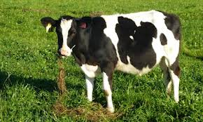

Friday, September the 13th, 2013
back to: title, date or indexes

Cows : read and learn, read and learn.
The longer a cow has been lying down, the more likely that cow will soon stand up, and once a cow stands up, you cannot easily predict how soon that cow will lie down again.
In the unlikely event that you require any further information on this important matter, go here.